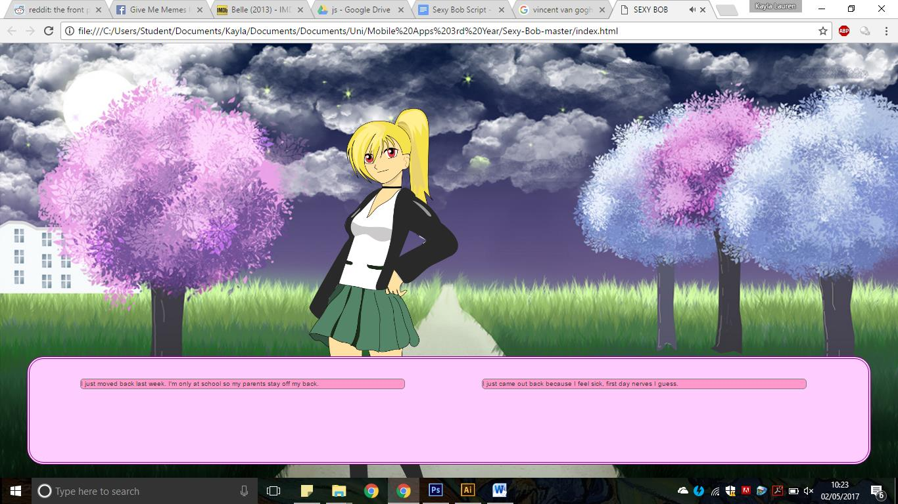
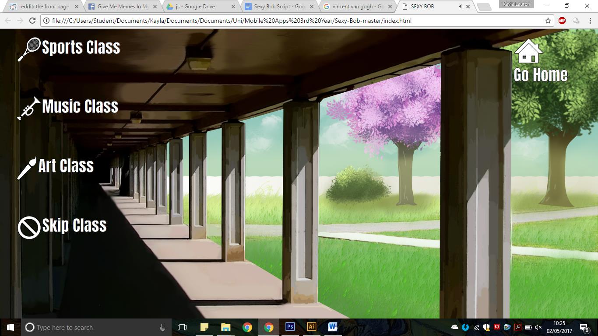
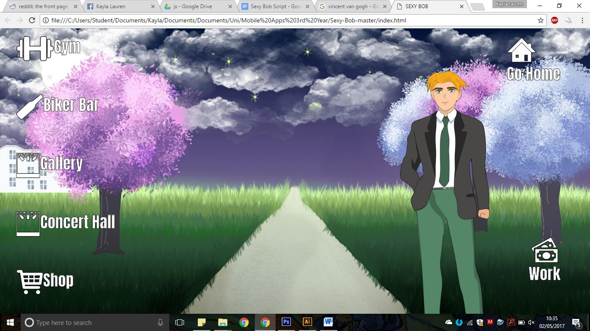

Instructions
Sexy Bob’s aim is to meet a girl and impress her to win a date with her after the school day is over. Girls can be impressed by selecting the chat box correct option whilst in conversation. Click the text box at the bottom of the page to progress the story.
During the school day, there is a navigation menu to enter into different classes. By clicking on one of the icons, the player can choose to go to different areas of school where different girls are usually located.
During the after school period, there is a different navigation menu presented which the player can use to decide which afterschool activity to go to. For example, the ‘Sporty’ girl Timoko can be found during school hours in the Sports Class and afterschool at the gym.
Winning the Game: If the player selects all the correct conversation options with a specific girl and has spoken to that girl enough times the relationship score may be high enough to invite the girl over to Bob’s house. If the girl accepts the invitation, then the criteria for winning the game has been met.